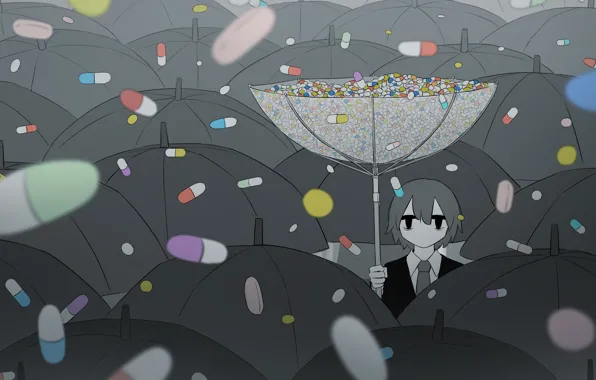

hi, my name is denah howpun
these are a few artists + people who inspire me
namjoon is not only an inspiration to me, but to many people.
the lyrics produced from this group touch base on mental health on numerous occations.
one of their best selling album series is "love yourself", the lyrics telling us to love ourselves depsite our flaws.

avogado showcases complex societal issues and hidden emotions within his artwork.
his artworks are so simple, yet hold such a deep meaning in them depending on how the viewer interprets them.
when I use to be in dance back in highschool, keone madrid was one of my favorite choreographers.
many of his dances showcased some sort of story within them, instead of just pure dancing. his moves
always had meaning and i loved seeing how he portrays different stories of his life into a dance.